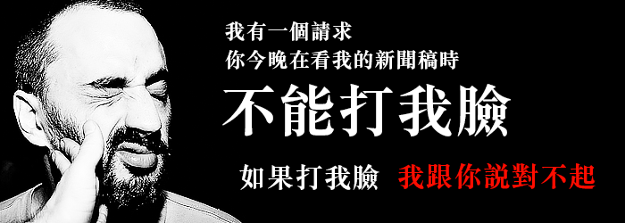

公民要割闌尾 蔡正元：呵呵 歡迎來！
公民要割闌尾 蔡正元：呵呵 歡迎來！ http://newtalk.tw/news/2014/05/05/46956.html 新頭殼newtalk2014.05.05 林雨佑/綜合報導 「割闌尾計畫」團隊今（5）日上午召開記者會宣布正式展開罷免行動，並直接點名網路 投票前3名要罷免的國民黨立委，依序分別是蔡正元、林鴻池、吳育昇。對此行動，蔡正 元回應歡迎「割闌尾」，並回嗆說台灣有暴戾之氣，長了很多黴菌，必要的時候要來「除 綠黴」。 罷免國民黨立委的「全民割闌委、監督爛立委」一發動立刻獲得熱烈響應，募款計畫從 5/3上網至今即募得970多萬元；割闌尾計畫團隊今天上午正式召開記者會，直接點名網路 投票前3名要罷免的國民黨立委，發動全民罷免行動。 對此，蔡正元回應說「呵呵，歡迎來（提罷免）。」此外，他也提議，現在台灣有暴戾之 氣的潮濕空氣，長了很多黴菌，所以要想辦法，若有必要的時候大清掃來「除綠黴」。將 來是否提告？蔡表示，還要看情況。 國民黨政策會執行長林鴻池表示，這個社會已經夠亂了，不要只以自己的意見為意見，想 置不同意見的人於死地，就發動罷免，這是民主政治的悲哀和倒退。會不會對提罷免行為 的人提告？他則表示，尊重言論自由，且國家有很多事要處理，沒時間跟他們耗。 另一位被點名要罷免的立委吳育昇，則選擇不回應。
Selected Text
None